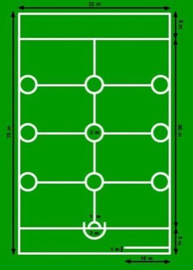

Home / Age of Contact and Craft / Northern and Eastern Europe
Playable heritage gameOina
Oina is Romania's long-standing bat-and-ball sport. Two teams of eleven take turns at bat and in the field: a teammate tosses a small leather ball and the batter strikes it with a long wooden stick as far as possible into the opposing half of a long, narrow pitch.


How to play
- Stand on the batting line with your long stick. Press, pull back and let go to swing: the dotted path shows where the ball will go.
- Pull farther for a longer hit. Aim between the side lines so the ball stays in play.
- The pitch is marked in zones. A ball past the three-quarters line scores 1; one that drops in the back zone scores 2; a ball that lands short in the open field scores nothing.
- You have six strikes in each of two halves. Beat the star targets for a better result, or watch the computer play first.
Rules at a glance
- The pitch is a long rectangle. The batter stands at the batting line and the far end is the back zone.
- In each half you have six strikes. Two halves are played; the score is the total of both.
- A ball that lands short of the three-quarters line, in the open field, scores 0.
- A ball that lands between the three-quarters line and the back line scores 1 point.
- A ball that lands in the back zone scores 2 points.
- A ball hit past the side lines or the far end is out of play and scores 0.
- The ball is hit by a swing of the stick: the pull sets direction and strength, and a light breeze can push it.
- Real oina also has runners and fielders who try to touch them with the ball; this version trains the hitting only.
About the tradition
Oina has been played in Romanian villages for centuries; the first written mention dates from 1364. Schools adopted it in 1899 and the Romanian Oina Federation was founded in 1932. Today it is played in schools, clubs and village cups, and it is Romania's national sport.
Origins
Usually placed in the era of Age of Contact and Craft (about 1500 to 1800), although its exact origins are uncertain, within the cultural world of Northern and Eastern Europe.
Credits
- Photo: Ayceman, Public domain, source on Wikimedia Commons
- Text: CC BY-SA 4.0, World Heritage Games.
Sources

Get the app
Oina is coming to the App Store and Google Play. One app, many traditions, no account needed.
More games to play


Marginea black pottery
Romania · Crafts and makingPlay preview · in the Tiles & Pottery of the World app


Celtic knot weave
Ireland +1 · Crafts and makingPlay preview · in the Textile Crafts of the World app
More from Romania

Horezu ceramics
Romania · Crafts and making
Trânta
Moldova +1 · Wrestling and martial sports